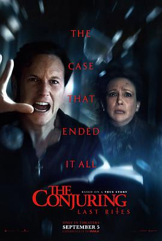

6.2
招魂4：终章
The Conjuring: Last Rites
2025
美国
评分 6.2
导演:
迈克尔·查维斯
演员:
帕特里克·威尔森 / 维拉·法米加 / 米娅·汤姆林森 / 本·哈迪 / 斯蒂芬·考特尔 / 蕾贝卡·卡尔德 / 艾略特·科万
类型:
恐怖,悬疑,惊悚
剧情简介
1986年，沃伦夫妇的驱魔之路似乎早已结束。艾德在上一次案件中因心脏病发作而被迫隐退，洛林则把更多时间投入到教学和写作中。然而，一通来自宾夕法尼亚州西皮茨顿的求救电话，再次撕开了他们努力缝合的平静生活。那是一户普通工薪家庭——斯莫尔一家——他们的家中开始出现奇异的气味、儿童笑声、无形的脚步声，还有在夜里微弱闪烁的灯光。随着调查的深入，沃伦夫妇发现这并非普通的闹鬼。屋内的阴影似乎与他们多年前封印的一件物品有关——那件被认为早已封印的遗物，如今竟在斯莫尔家的地下室被重新唤醒。艾德的病情让他在每一次驱魔时都近乎崩溃，而洛林的灵视能力也被恶灵反噬，幻觉与现实的界限被撕裂。导演迈克尔·查维斯将光影、声场与宗教象征推向极致：走廊的灯泡频闪、墙壁流出的圣油、洛林凝视镜面中自己扭曲的倒影——这一切构筑出一场关于信仰与牺牲的心理折磨。影片中，沃伦夫妇不再只是灵异侦探，而是被命运选中的“殉道者”。《招魂4：终章》以“最后的仪式”为题，不仅是他们职业生涯的终点，也是对整部系列信仰内核的回溯。恶灵的诡计、信仰的崩塌、人性的脆弱交织成一次终极考验。那场最终的驱魔，既是救赎，也是诀别。